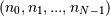
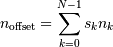
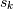
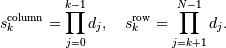
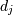
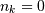
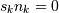

The N-dimensional array (ndarray)¶
An ndarray is a (usually fixed-size) multidimensional container of items of the same type and size. The number of dimensions and items in an array is defined by its shape, which is a tuple of N positive integers that specify the sizes of each dimension. The type of items in the array is specified by a separate data-type object (dtype), one of which is associated with each ndarray.
As with other container objects in Python, the contents of an ndarray can be accessed and modified by indexing or slicing the array (using, for example, N integers), and via the methods and attributes of the ndarray.
Different ndarrays can share the same data, so that changes made in one ndarray may be visible in another. That is, an ndarray can be a “view” to another ndarray, and the data it is referring to is taken care of by the “base” ndarray. ndarrays can also be views to memory owned by Python strings or objects implementing the buffer or array interfaces.
Example
A 2-dimensional array of size 2 x 3, composed of 4-byte integer elements:
>>> x = np.array([[1, 2, 3], [4, 5, 6]], np.int32)
>>> type(x)
<type 'numpy.ndarray'>
>>> x.shape
(2, 3)
>>> x.dtype
dtype('int32')
The array can be indexed using Python container-like syntax:
>>> x[1,2] # i.e., the element of x in the *second* row, *third*
column, namely, 6.
For example slicing can produce views of the array:
>>> y = x[:,1]
>>> y
array([2, 5])
>>> y[0] = 9 # this also changes the corresponding element in x
>>> y
array([9, 5])
>>> x
array([[1, 9, 3],
[4, 5, 6]])
Constructing arrays¶
New arrays can be constructed using the routines detailed in Array creation routines, and also by using the low-level ndarray constructor:
| ndarray | An array object represents a multidimensional, homogeneous array of fixed-size items. |
Indexing arrays¶
Arrays can be indexed using an extended Python slicing syntax, array[selection]. Similar syntax is also used for accessing fields in a record array.
See also
Internal memory layout of an ndarray¶
An instance of class ndarray consists of a contiguous one-dimensional segment of computer memory (owned by the array, or by some other object), combined with an indexing scheme that maps N integers into the location of an item in the block. The ranges in which the indices can vary is specified by the shape of the array. How many bytes each item takes and how the bytes are interpreted is defined by the data-type object associated with the array.
A segment of memory is inherently 1-dimensional, and there are many different schemes for arranging the items of an N-dimensional array in a 1-dimensional block. Numpy is flexible, and ndarray objects can accommodate any strided indexing scheme. In a strided scheme, the N-dimensional index  corresponds to the offset (in bytes):

from the beginning of the memory block associated with the array. Here,  are integers which specify the strides of the array. The column-major order (used, for example, in the Fortran language and in Matlab) and row-major order (used in C) schemes are just specific kinds of strided scheme, and correspond to memory that can be addressed by the strides:

where  = self.itemsize * self.shape[j].
Both the C and Fortran orders are contiguous, i.e., single-segment, memory layouts, in which every part of the memory block can be accessed by some combination of the indices.
While a C-style and Fortran-style contiguous array, which has the corresponding flags set, can be addressed with the above strides, the actual strides may be different. This can happen in two cases:
- If self.shape[k] == 1 then for any legal index index[k] == 0. This means that in the formula for the offset  and thus  and the value of = self.strides[k] is arbitrary.
- If an array has no elements (self.size == 0) there is no legal index and the strides are never used. Any array with no elements may be considered C-style and Fortran-style contiguous.
Point 1. means that self``and ``self.squeeze() always have the same contiguity and aligned flags value. This also means that even a high dimensional array could be C-style and Fortran-style contiguous at the same time.
An array is considered aligned if the memory offsets for all elements and the base offset itself is a multiple of self.itemsize.
Note
Points (1) and (2) are not yet applied by default. Beginning with Numpy 1.8.0, they are applied consistently only if the environment variable NPY_RELAXED_STRIDES_CHECKING=1 was defined when NumPy was built. Eventually this will become the default.
You can check whether this option was enabled when your NumPy was built by looking at the value of np.ones((10,1), order='C').flags.f_contiguous. If this is True, then your NumPy has relaxed strides checking enabled.
Warning
It does not generally hold that self.strides[-1] == self.itemsize for C-style contiguous arrays or self.strides[0] == self.itemsize for Fortran-style contiguous arrays is true.
Data in new ndarrays is in the row-major (C) order, unless otherwise specified, but, for example, basic array slicing often produces views in a different scheme.
Note
Several algorithms in NumPy work on arbitrarily strided arrays. However, some algorithms require single-segment arrays. When an irregularly strided array is passed in to such algorithms, a copy is automatically made.
Array attributes¶
Array attributes reflect information that is intrinsic to the array itself. Generally, accessing an array through its attributes allows you to get and sometimes set intrinsic properties of the array without creating a new array. The exposed attributes are the core parts of an array and only some of them can be reset meaningfully without creating a new array. Information on each attribute is given below.
Memory layout¶
The following attributes contain information about the memory layout of the array:
| ndarray.flags | Information about the memory layout of the array. |
| ndarray.shape | Tuple of array dimensions. |
| ndarray.strides | Tuple of bytes to step in each dimension when traversing an array. |
| ndarray.ndim | Number of array dimensions. |
| ndarray.data | Python buffer object pointing to the start of the array’s data. |
| ndarray.size | Number of elements in the array. |
| ndarray.itemsize | Length of one array element in bytes. |
| ndarray.nbytes | Total bytes consumed by the elements of the array. |
| ndarray.base | Base object if memory is from some other object. |
Data type¶
See also
The data type object associated with the array can be found in the dtype attribute:
| ndarray.dtype | Data-type of the array’s elements. |
Other attributes¶
| ndarray.T | Same as self.transpose(), except that self is returned if self.ndim < 2. |
| ndarray.real | The real part of the array. |
| ndarray.imag | The imaginary part of the array. |
| ndarray.flat | A 1-D iterator over the array. |
| ndarray.ctypes | An object to simplify the interaction of the array with the ctypes module. |
| __array_priority__ |
Array interface¶
See also
| __array_interface__ | Python-side of the array interface |
| __array_struct__ | C-side of the array interface |
ctypes foreign function interface¶
| ndarray.ctypes | An object to simplify the interaction of the array with the ctypes module. |
Array methods¶
An ndarray object has many methods which operate on or with the array in some fashion, typically returning an array result. These methods are briefly explained below. (Each method’s docstring has a more complete description.)
For the following methods there are also corresponding functions in numpy: all, any, argmax, argmin, argpartition, argsort, choose, clip, compress, copy, cumprod, cumsum, diagonal, imag, max, mean, min, nonzero, partition, prod, ptp, put, ravel, real, repeat, reshape, round, searchsorted, sort, squeeze, std, sum, swapaxes, take, trace, transpose, var.
Array conversion¶
| ndarray.item(*args) | Copy an element of an array to a standard Python scalar and return it. |
| ndarray.tolist() | Return the array as a (possibly nested) list. |
| ndarray.itemset(*args) | Insert scalar into an array (scalar is cast to array’s dtype, if possible) |
| ndarray.setasflat | |
| ndarray.tostring([order]) | Construct a Python string containing the raw data bytes in the array. |
| ndarray.tofile(fid[, sep, format]) | Write array to a file as text or binary (default). |
| ndarray.dump(file) | Dump a pickle of the array to the specified file. |
| ndarray.dumps() | Returns the pickle of the array as a string. |
| ndarray.astype(dtype[, order, casting, ...]) | Copy of the array, cast to a specified type. |
| ndarray.byteswap(inplace) | Swap the bytes of the array elements |
| ndarray.copy([order]) | Return a copy of the array. |
| ndarray.view([dtype, type]) | New view of array with the same data. |
| ndarray.getfield(dtype[, offset]) | Returns a field of the given array as a certain type. |
| ndarray.setflags([write, align, uic]) | Set array flags WRITEABLE, ALIGNED, and UPDATEIFCOPY, respectively. |
| ndarray.fill(value) | Fill the array with a scalar value. |
Shape manipulation¶
For reshape, resize, and transpose, the single tuple argument may be replaced with n integers which will be interpreted as an n-tuple.
| ndarray.reshape(shape[, order]) | Returns an array containing the same data with a new shape. |
| ndarray.resize(new_shape[, refcheck]) | Change shape and size of array in-place. |
| ndarray.transpose(*axes) | Returns a view of the array with axes transposed. |
| ndarray.swapaxes(axis1, axis2) | Return a view of the array with axis1 and axis2 interchanged. |
| ndarray.flatten([order]) | Return a copy of the array collapsed into one dimension. |
| ndarray.ravel([order]) | Return a flattened array. |
| ndarray.squeeze([axis]) | Remove single-dimensional entries from the shape of a. |
Item selection and manipulation¶
For array methods that take an axis keyword, it defaults to None. If axis is None, then the array is treated as a 1-D array. Any other value for axis represents the dimension along which the operation should proceed.
| ndarray.take(indices[, axis, out, mode]) | Return an array formed from the elements of a at the given indices. |
| ndarray.put(indices, values[, mode]) | Set a.flat[n] = values[n] for all n in indices. |
| ndarray.repeat(repeats[, axis]) | Repeat elements of an array. |
| ndarray.choose(choices[, out, mode]) | Use an index array to construct a new array from a set of choices. |
| ndarray.sort([axis, kind, order]) | Sort an array, in-place. |
| ndarray.argsort([axis, kind, order]) | Returns the indices that would sort this array. |
| ndarray.partition(kth[, axis, kind, order]) | Rearranges the elements in the array in such a way that value of the element in kth position is in the position it would be in a sorted array. |
| ndarray.argpartition(kth[, axis, kind, order]) | Returns the indices that would partition this array. |
| ndarray.searchsorted(v[, side, sorter]) | Find indices where elements of v should be inserted in a to maintain order. |
| ndarray.nonzero() | Return the indices of the elements that are non-zero. |
| ndarray.compress(condition[, axis, out]) | Return selected slices of this array along given axis. |
| ndarray.diagonal([offset, axis1, axis2]) | Return specified diagonals. |
Calculation¶
Many of these methods take an argument named axis. In such cases,
- If axis is None (the default), the array is treated as a 1-D array and the operation is performed over the entire array. This behavior is also the default if self is a 0-dimensional array or array scalar. (An array scalar is an instance of the types/classes float32, float64, etc., whereas a 0-dimensional array is an ndarray instance containing precisely one array scalar.)
- If axis is an integer, then the operation is done over the given axis (for each 1-D subarray that can be created along the given axis).
Example of the axis argument
A 3-dimensional array of size 3 x 3 x 3, summed over each of its three axes
>>> x
array([[[ 0, 1, 2],
[ 3, 4, 5],
[ 6, 7, 8]],
[[ 9, 10, 11],
[12, 13, 14],
[15, 16, 17]],
[[18, 19, 20],
[21, 22, 23],
[24, 25, 26]]])
>>> x.sum(axis=0)
array([[27, 30, 33],
[36, 39, 42],
[45, 48, 51]])
>>> # for sum, axis is the first keyword, so we may omit it,
>>> # specifying only its value
>>> x.sum(0), x.sum(1), x.sum(2)
(array([[27, 30, 33],
[36, 39, 42],
[45, 48, 51]]),
array([[ 9, 12, 15],
[36, 39, 42],
[63, 66, 69]]),
array([[ 3, 12, 21],
[30, 39, 48],
[57, 66, 75]]))
The parameter dtype specifies the data type over which a reduction operation (like summing) should take place. The default reduce data type is the same as the data type of self. To avoid overflow, it can be useful to perform the reduction using a larger data type.
For several methods, an optional out argument can also be provided and the result will be placed into the output array given. The out argument must be an ndarray and have the same number of elements. It can have a different data type in which case casting will be performed.
| ndarray.argmax([axis, out]) | Return indices of the maximum values along the given axis. |
| ndarray.min([axis, out]) | Return the minimum along a given axis. |
| ndarray.argmin([axis, out]) | Return indices of the minimum values along the given axis of a. |
| ndarray.ptp([axis, out]) | Peak to peak (maximum - minimum) value along a given axis. |
| ndarray.clip(a_min, a_max[, out]) | Return an array whose values are limited to [a_min, a_max]. |
| ndarray.conj() | Complex-conjugate all elements. |
| ndarray.round([decimals, out]) | Return a with each element rounded to the given number of decimals. |
| ndarray.trace([offset, axis1, axis2, dtype, out]) | Return the sum along diagonals of the array. |
| ndarray.sum([axis, dtype, out]) | Return the sum of the array elements over the given axis. |
| ndarray.cumsum([axis, dtype, out]) | Return the cumulative sum of the elements along the given axis. |
| ndarray.mean([axis, dtype, out]) | Returns the average of the array elements along given axis. |
| ndarray.var([axis, dtype, out, ddof]) | Returns the variance of the array elements, along given axis. |
| ndarray.std([axis, dtype, out, ddof]) | Returns the standard deviation of the array elements along given axis. |
| ndarray.prod([axis, dtype, out]) | Return the product of the array elements over the given axis |
| ndarray.cumprod([axis, dtype, out]) | Return the cumulative product of the elements along the given axis. |
| ndarray.all([axis, out]) | Returns True if all elements evaluate to True. |
| ndarray.any([axis, out]) | Returns True if any of the elements of a evaluate to True. |
Arithmetic and comparison operations¶
Arithmetic and comparison operations on ndarrays are defined as element-wise operations, and generally yield ndarray objects as results.
Each of the arithmetic operations (+, -, *, /, //, %, divmod(), ** or pow(), <<, >>, &, ^, |, ~) and the comparisons (==, <, >, <=, >=, !=) is equivalent to the corresponding universal function (or ufunc for short) in Numpy. For more information, see the section on Universal Functions.
Comparison operators:
| ndarray.__lt__ | x.__lt__(y) <==> x<y |
| ndarray.__le__ | x.__le__(y) <==> x<=y |
| ndarray.__gt__ | x.__gt__(y) <==> x>y |
| ndarray.__ge__ | x.__ge__(y) <==> x>=y |
| ndarray.__eq__ | x.__eq__(y) <==> x==y |
| ndarray.__ne__ | x.__ne__(y) <==> x!=y |
Truth value of an array (bool):
| ndarray.__nonzero__ | x.__nonzero__() <==> x != 0 |
Note
Truth-value testing of an array invokes ndarray.__nonzero__, which raises an error if the number of elements in the the array is larger than 1, because the truth value of such arrays is ambiguous. Use .any() and .all() instead to be clear about what is meant in such cases. (If the number of elements is 0, the array evaluates to False.)
Unary operations:
| ndarray.__neg__ | x.__neg__() <==> -x |
| ndarray.__pos__ | x.__pos__() <==> +x |
| ndarray.__abs__() <==> abs(x) | |
| ndarray.__invert__ | x.__invert__() <==> ~x |
Arithmetic:
| ndarray.__add__ | x.__add__(y) <==> x+y |
| ndarray.__sub__ | x.__sub__(y) <==> x-y |
| ndarray.__mul__ | x.__mul__(y) <==> x*y |
| ndarray.__div__ | x.__div__(y) <==> x/y |
| ndarray.__truediv__ | x.__truediv__(y) <==> x/y |
| ndarray.__floordiv__ | x.__floordiv__(y) <==> x//y |
| ndarray.__mod__ | x.__mod__(y) <==> x%y |
| ndarray.__divmod__(y) <==> divmod(x, y) | |
| ndarray.__pow__(y[, z]) <==> pow(x, y[, z]) | |
| ndarray.__lshift__ | x.__lshift__(y) <==> x<<y |
| ndarray.__rshift__ | x.__rshift__(y) <==> x>>y |
| ndarray.__and__ | x.__and__(y) <==> x&y |
| ndarray.__or__ | x.__or__(y) <==> x|y |
| ndarray.__xor__ | x.__xor__(y) <==> x^y |
Note
- Any third argument to pow is silently ignored, as the underlying ufunc takes only two arguments.
- The three division operators are all defined; div is active by default, truediv is active when __future__ division is in effect.
- Because ndarray is a built-in type (written in C), the __r{op}__ special methods are not directly defined.
- The functions called to implement many arithmetic special methods for arrays can be modified using set_numeric_ops.
Arithmetic, in-place:
| ndarray.__iadd__ | x.__iadd__(y) <==> x+=y |
| ndarray.__isub__ | x.__isub__(y) <==> x-=y |
| ndarray.__imul__ | x.__imul__(y) <==> x*=y |
| ndarray.__idiv__ | x.__idiv__(y) <==> x/=y |
| ndarray.__itruediv__ | x.__itruediv__(y) <==> x/y |
| ndarray.__ifloordiv__ | x.__ifloordiv__(y) <==> x//y |
| ndarray.__imod__ | x.__imod__(y) <==> x%=y |
| ndarray.__ipow__ | x.__ipow__(y) <==> x**=y |
| ndarray.__ilshift__ | x.__ilshift__(y) <==> x<<=y |
| ndarray.__irshift__ | x.__irshift__(y) <==> x>>=y |
| ndarray.__iand__ | x.__iand__(y) <==> x&=y |
| ndarray.__ior__ | x.__ior__(y) <==> x|=y |
| ndarray.__ixor__ | x.__ixor__(y) <==> x^=y |
Warning
In place operations will perform the calculation using the precision decided by the data type of the two operands, but will silently downcast the result (if necessary) so it can fit back into the array. Therefore, for mixed precision calculations, A {op}= B can be different than A = A {op} B. For example, suppose a = ones((3,3)). Then, a += 3j is different than a = a + 3j: while they both perform the same computation, a += 3 casts the result to fit back in a, whereas a = a + 3j re-binds the name a to the result.
Special methods¶
For standard library functions:
| ndarray.__copy__([order]) | Return a copy of the array. |
| ndarray.__deepcopy__(() -> Deep copy of array.) | Used if copy.deepcopy is called on an array. |
| ndarray.__reduce__() | For pickling. |
| ndarray.__setstate__(version, shape, dtype, ...) | For unpickling. |
Basic customization:
| ndarray.__new__((S, ...) | |
| ndarray.__array__(...) | Returns either a new reference to self if dtype is not given or a new array |
| ndarray.__array_wrap__(...) |
Container customization: (see Indexing)
| ndarray.__len__() <==> len(x) | |
| ndarray.__getitem__ | x.__getitem__(y) <==> x[y] |
| ndarray.__setitem__ | x.__setitem__(i, y) <==> x[i]=y |
| ndarray.__getslice__ | x.__getslice__(i, j) <==> x[i:j] |
| ndarray.__setslice__ | x.__setslice__(i, j, y) <==> x[i:j]=y |
| ndarray.__contains__ | x.__contains__(y) <==> y in x |
Conversion; the operations complex, int, long, float, oct, and hex. They work only on arrays that have one element in them and return the appropriate scalar.
| ndarray.__int__() <==> int(x) | |
| ndarray.__long__() <==> long(x) | |
| ndarray.__float__() <==> float(x) | |
| ndarray.__oct__() <==> oct(x) | |
| ndarray.__hex__() <==> hex(x) |
String representations:
| ndarray.__str__() <==> str(x) | |
| ndarray.__repr__() <==> repr(x) |